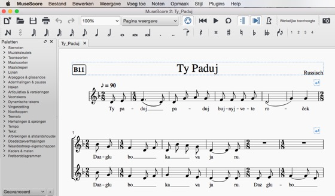

Hier kun je van een aantal liederen de bladmuziek ophalen in MuseScore formaat.
MuseScore is een programma om bladmuziek te maken, te beluisteren en af te drukken. Met de Mixer van het menu Weergave kun je ook apart naar de partij van je eigen stemgroep luisteren.
MuseScore is te vinden op musescore.org.

| Adio Kerida: adiokerida.mscz | Olijven vallen: olijven.mscz |
| Boroech Ate: boroech.mscz | Polegala: polegala.mscz |
| Daar is de lente: lente.mscz | Step da step krugom: step.mscz |
| Ejder ich lejg mich: ejder.mscz | Ty paduj: typaduj.mscz |
| Erev shell shoshanim: erev.mscz | Vecher: vecher.mscz |
| Gorani: gorani.mscz | Waar bleeft ge: waar.mscz |
| Koszonto: koszonto.mscz | Za dvinoj: zadvinoj.mscz |
| Mnogaja ljeta: mnogaja.mscz |